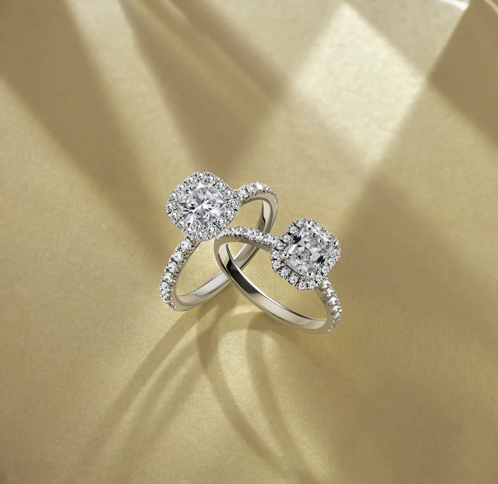
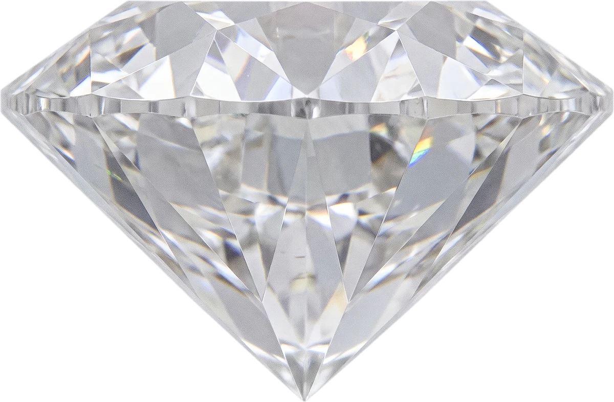
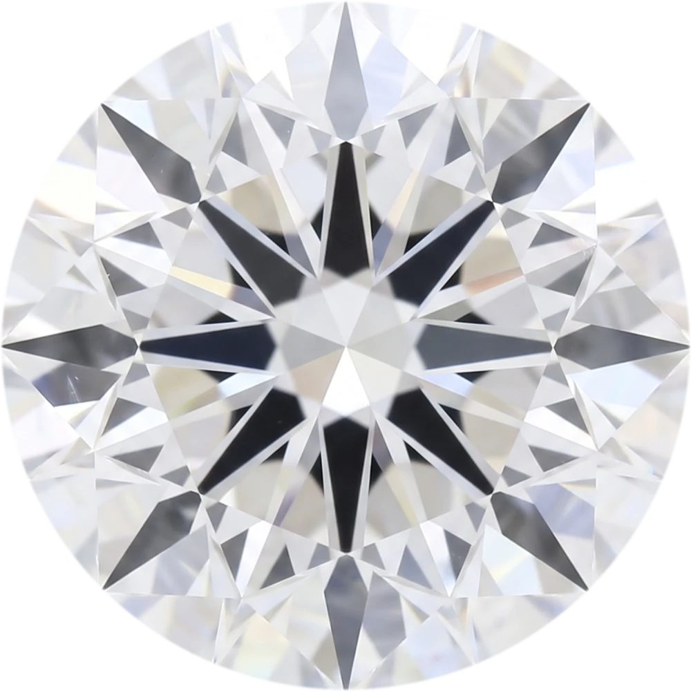
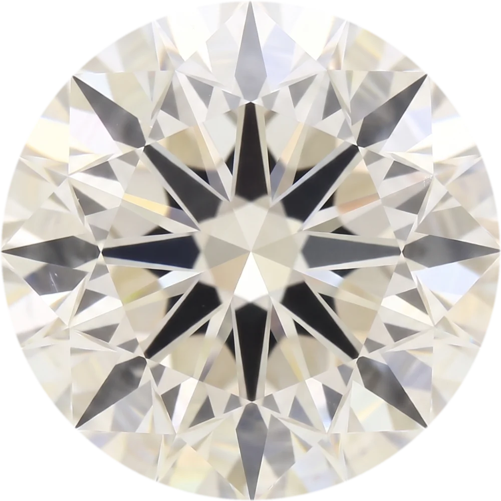
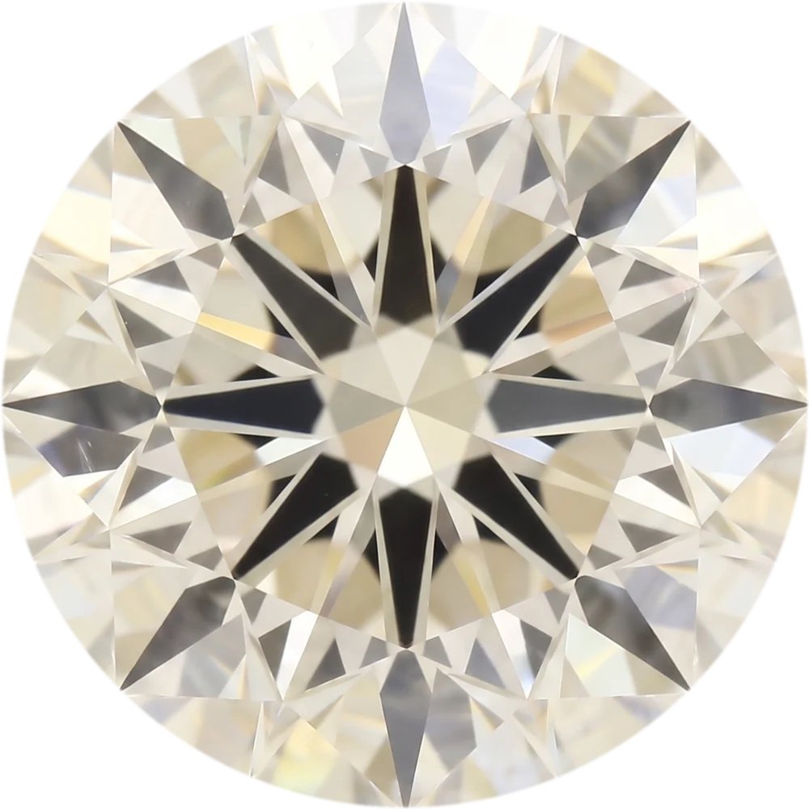
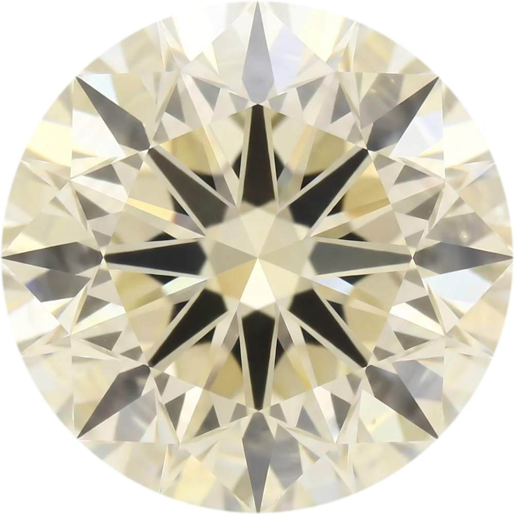

Guide du diamant
Apprendre à lire une pierre
La taille, la couleur, la pureté, le carat. Quatre mots qui décident du prix, et de ce que vous voyez.
Un diamant se décrit par quatre mesures, les 4 C. Aucune ne résume les autres. Il n’y a pas de bonne réponse : on choisit ce qu'on privilégie, et on accepte de céder ailleurs.
Premier C
La taille
La taille n'est pas la forme : c'est la qualité du travail du lapidaire. Les proportions, la symétrie et le poli décident de la façon dont la lumière entre dans la pierre, rebondit et ressort. C'est le seul des quatre critères qui dépend entièrement de la main de l'homme, et celui qui se voit le plus.

TableCouronneRondistePavillonColette- ExcellentLa lumière ressort par le dessus. Le maximum de feu.
- Très bonPresque le même éclat, une taille un peu moins serrée.
- BonBelle pierre, une partie de la lumière fuit par les côtés.
- MoyenL'éclat baisse nettement, la pierre paraît plus sourde.
- MédiocreLa lumière traverse. C'est ce qu'on ne monte pas.
Deuxième C
La couleur
Un diamant blanc se note de D à Z : D est incolore, Z porte une teinte jaune ou brune visible. Plus la pierre s'approche de D, plus elle est rare. Déplacez le curseur : la note change, la nuance aussi.




IncoloreAucune teinte, même sous la loupe du gemmologue. La plus rare.
Troisième C
La pureté
Toutes les pierres portent des traces de leur formation : des inclusions. La pureté mesure ce qu'on en voit à la loupe, à dix fois. Faites glisser : les inclusions apparaissent dans la pierre au fur et à mesure qu'on descend l'échelle.
FL FlawlessAucune inclusion, aucune trace en surface, à dix fois. Une pierre sur des milliers.
Quatrième C
Le carat
Le carat est un poids, pas une dimension : un carat vaut 0,2 gramme. À poids égal, une pierre bien taillée paraît plus grande qu’une pierre taillée trop profonde. La pierre est montrée à côté d'une pièce de 1 euro, à la même échelle. Pour la voir en grandeur réelle sur cet écran, réglez l’échelle avec une vraie pièce.
1,00 carat
Posez une pièce de 1 € sur celle de l'écran, puis ajustez jusqu'à ce qu'elles se recouvrent. La pierre est alors en grandeur réelle.
Diamètres d'un brillant rond de taille standard. À carat égal, une pierre mal taillée paraît plus petite.
Et la preuve
Le certificat
Chaque diamant de la maison est vérifié par un laboratoire indépendant. Le rapport donne le poids, les dimensions, la taille, la couleur et la pureté, mesurés par des gemmologues, avec leurs instruments, hors de toute vente.
- GIAGemological Institute of America. C'est lui qui a défini les échelles des 4 C.
- IGIInternational Gemological Institute.
- HRDHoge Raad voor Diamant, Anvers.
Choisir votre pierre avec nous
On regarde ensemble ce qui compte pour vous, et ce sur quoi il vaut mieux céder.
Prendre rendez-vous